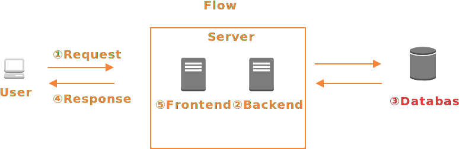

安全なWebアプリケーションの作り方
***
Agenda
- トレーニング概要
- 自己紹介
- 不正利用防止対策について
- ステップ別セキュリティ対策
トレーニング概要
トレーニング概要
アプリケーションの構築ステップに分けてアプリケーションを安定稼働させるポイントを解説
WHAT I'M ABOUT
株式会社TRUNK TL Kawasaki Atsushi
2013年じげんグループHRメディア事業のPMやバックエンドを担当。
新規事業立ち上げの経験を経てエンジニアリングユニットのマネージャーに従事。
2015年に株式会社カヤックへ入社。
クライアントワークや自社サービス(Lobi)のフロントエンド、バックエンドおよびインフラ設計、構築、運用を担当。
不正利用防止対策について
不正利用防止対策について
ここでは脆弱性の早期発見の仕組みや未然に防ぐための手法を紹介する
- 脆弱性診断
- バグバウンティ
脆弱性診断
WEBアプリケーションの脆弱性診断では大きく「プラットフォーム診断」と「アプリケーション診断」がある
- プラットフォーム診断
サーバーやネットワークに対する脆弱性診断
- アプリケーション診断
Webアプリケーションに対する脆弱性診断。「ブラックボックス診断」と呼ばれる診断方法では実際にWebアプリケーションを動かして診断を行う。 一方、「ホワイトボックス診断」と呼ばれる診断方法ではソースコードを解析することにより、脆弱性を発見します。
脆弱性診断ツールの代表例
Nmap
ポートスキャンという機能が有名でサーバーやネットワーク機器のオープンポートを列挙する
https://nmap.org/man/jp/
Nessus
Nessusは現在まで世界中で20,000以上の顧客と10,000,000件のダウンロードが有ったネットワーク業界で最も広く知られたネットワーク機器の 脆弱性検出とシステム機器構成評価用ソフトウェア
https://jp.tenable.com/products/nessus/nessus-professional
バグバウンティ
バグバウンティとは「脆弱性報奨金制度」や「バグ報奨金制度」とも呼ばれ、、企業が脆弱性に報奨金をかけて一般公開し、 一般人が発見した脆弱性を報告して報奨金を受け取る制度
導入例
Googleでは、ChromeとAndroidを分けてバグバウンティのプログラムを用意 過去には、緊急度が高い脆弱を発見した人に対し、約330万円（30,000$）の報奨金が支払われた例もある
Facebookとその傘下であるInstagramでバグバウンティのプログラムを用意 2016年には、10歳の少年がInstagramの脆弱性を指摘し、約100万円（10,000$）の報奨金が支払われた
ステップ別セキュリティ対策
安全なアプリケーションとは?
- システムやネットワーク、データを安全な状態に保つ
- システムの安定稼働(冗長化)
- 利用ポリシー (知的財産権/脅迫)
脆弱性とは?
脆弱性とはセキュリティバグのことを指し、悪用できるバグとも言えます。 アプリケーションにバグはつきものですが、セキュリティーホールになりえるようなバグの例は以下になります。
- 個人情報が閲覧できる
- Webサイトの内容が書き換えられる
- サイトを閲覧した利用者のPCを感染させる
- コンピューター資源を勝手に使われる (暗号通貨のマイニング)
アプリケーション制作ステップ
- ドメイン取得
- サーバーの構築
- アプリケーションの作成
- テスト
- リリース
ドメイン取得
ドメイン取得
Webドメインとは、WebサイトのURLの終わりにある.comや.jpなどのサイトが登録された場所を示す文字コードです。 ドメインの種別は大きく分けて「gTLD」と「ccTLD」に大別できます。 gTLDは従来、世界の誰もが登録できる「.com」「.net」「.org」と、登録にあたって一定の要件が必要とされる「.edu」「.gov」などが存在する。 ccTLDは、各国/地域に割り当てられたTLDであり、2文字の国コードを原則として使用している。「.jp」「.au」「.us」などが例に挙げられる ※補足 新gTLDを自分で作成しようとした場合 申請料：約1654万円、年間費用:224万円 + 様々な審査を通ればTLDが作れる
取得ドメインの注意点
vb.lyが警告なしでリビア政府によって差し押さえらた事例もあるとおりccTLDのドメインは国の情勢も考慮に入れたほうが良い。 また、ioドメインもccTLDのドメインの一種だが、過去にioドメインの名前解決障害が起こったこともあるように実際のプロダクションで利用する場合は慎重に導入したほうがよい
サーバーの構築
- ポートの開放
- ミドルウェアのインストール
- ログ管理
ポートの開放
アプリケーションを構築する上でまずはサーバーを構築することとなる Webサーバーの場合はポートを開放して外部からのアクセスを受け付ける必要があるが、開放するポートの設定は気をつける必要がある
ポートの種類
80/443
http/https通信が行われているポート サイト訪問者がこのポートを利用してリソースを取得するため、誰でもこのポートを利用してサーバーにアクセスすることができる
22
SSHで利用されるポート。SSHとはサーバーに接続し遠隔操作をする仕組みで主にサイト運用者がこのポートを利用する そのため、SSH接続が可能な接続元アドレスを指定することがよい。また、複数人でサーバーを運用する場合は権限管理の設定に気をつける
21
FTPとはFile Transfer Protocolの省略でファイルの転送に使われているプロトコル 昔はページの更新などでこのポートが利用されていたが、現在では セキュリティ上問題 があるため現在ではほとんど使われない セキュリティ上の問題というのは通信データが「暗号化」されていないことにあります。つまり、接続情報が盗聴されるリクスがあります
ミドルウェア
サーバーは様々なミドルウェアを組み合わせて構築されていきます。代表例としてはApacheやNginx,Mysql,PostgreSqlがそれらにあたります。 便利は反面、ミドルウェアの脆弱性をついたサイバー攻撃も発生します。脆弱性が見つかった場合はインストールしているミドルウェアのバージョンを確認し、 速やかにセキュリティパッチを取り込むようにしましょう。 セキュリティパッチ情報例 https://www.ipa.go.jp/security/announce/about.html#section2
ログ管理
ログは情報漏えいが発生してしまったときにその被害状況や影響調査などに使用するため、ログの取得と保管が重要 ただし、機密情報 (パスワードなど) はログに平文では書き込まないように注意
アプリケーションの作成
ブラウザにレンダリングされるまでの流れ

Request/Response
- 暗号化通信
- キャッシュ
- Cookie
- CORS
暗号化通信
HTTP通信でクライアントとサーバー間の通信が暗号化されておらず、盗聴される危険がある 個人情報を扱うようなアプリケーションを作成する場合は必ずHTTPS対応が必要 参考: https://letsencrypt.jp/

キャッシュ
キャッシュはアプリケーションのパフォーマンス向上に期待でき、多くのアプリケーションで導入されている ただし、セッション情報が利用されているページや個人情報が乗っているページをキャッシュすると情報漏えいの原因となるので キャッシュルールの設定には十分気をつける必要がある
Cookie
自動認証機能などを作成する場合、クッキーをアプリケーションで利用することになる
| カラム名 | 値 (例) | 説明 |
|---|---|---|
| Name | _twitter | クッキー名 |
| Value | BAh7CSIKZmxhc2hJ... | クッキー値 (暗号化したデータをセット) セキュリティ上、以下のようなことを気をつける必要があります ・暗号化したデータをセットする ・パスワードなどの機密情報をクッキーにセットしない |
| domain | .twitter.com | クッキーが届くドメインを指定 .twitter.comと指定することによりサブドメイン間との共有もできる |
| path | / | クッキーを読み込めるパスを指定する 「/」 と指定することで全ページから読み込める |
| Expires / Max-Age | 2028-09-09T01:13:08.543Z | クッキーの有効期限 省略するとブラウザを終了させるまでが有効期限となる |
| HttpOnly | true | CookieをJavaScriptからアクセスできないように制限 |
| Secure | true | HTTPSで通信している場合にのみCookieを送信する |
CORS
CORS (Cross-Origin Resource Sharing)とは異なるオリジン間でデータをやり取りするための取り決め CORSの設定はレスポンスヘッダによって行うが、同一オリジンポリシーが全く無い場合ブラウザから悪意ある攻撃者のサイトにアクセスし、 ページのJavaScriptが実行される危険性がある
| ヘッダ | 説明 |
|---|---|
| Access-Control-Allow-Origin | 許可するオリジン |
| Access-Control-Allow-Methods | 許可するHTTPメソッドの種類 |
アプリケーション処理 (Backend)
アプリケーション処理 (Backend)
- 入力値の検証
- CSRF
- セッション管理
- オープンリダイレクト
- メールヘッダ・インジェクション
- ディレクトリ・トラバーサル
- OSコマンドインジェクション
入力値の検証ステップ
- 文字エンコーディングの妥当性検証
- 入力値の妥当性検証
文字エンコーディングの妥当性検証
Ruby1.9では不正な文字コードを受け付けない言語仕様となっているため、アプリケーションで検証を行っていないことも 少なくないかもしれませんが、もし不正な文字コードを受け付けてしまった場合はバグの温床となる恐れがある
入力値の妥当性検証
入力値検証 (バリデーション) の主目的はセキュリティのためではないですが、セキュリティ対策に役立つ例もあります。 ・SQLインジェクション対策が漏れていた場合でも入力値検証により実害に至らない などもその一つです。データの不整合を起こさないためにもバリデーションチェックはしっかり行う必要がある
CSRF
CSRF(クロスサイトリクエストフォージェリ)とはリクエスト強要とも呼ばれており、悪意のある第三者が作成したページを利用者が見た場合に 意図しない形でショッピングカートに品物を入れてしまったり、SNSへ投稿してしまったりする攻撃の一種。
<body onload="document.csrf.submit()">
<form name="csrf" action="http://sample.shop.com/order" method="POST">
<input type="hidden" name="product" value="bread">
<input type="hidden" name="amount" value="1000">
</form>
</body>
CSRF対策
Webアプリケーションフレームワーク側でワンタイムトークンの発行を標準でサポートされていることが多いため、利用すると良い ワンタイムトークンとはページを閲覧しているユーザーごとにランダムなトークン文字列が発行され、サーバー側でトークンの検証を行うことで 第三者からのリクエストを受けつ内容にする
セッション管理
セッションはログイン認証状態の保持する手段としてセッション管理機構が用いられています。 主流のセッション管理機構は、クッキーなどにセッションIDを保存させ、セッションIDをキーにサーバー側で情報を記憶するという手法が取られている。 第三者にこのセッションIDが知られると、その利用者に成りすましてアクセスされる可能性があります。第三者が悪用して成りすますことを「セッションハイジャック」 と呼びます。
セッションハイジャックの対策法
推測可能なセッションIDを使わない サーバー側でセッション情報を保存する セッション情報を暗号化する セッション情報を露出させない (URLに埋め込まない)
その他のセキュリティ対策
オープンリダイレクト
パラメータにより指定したURLにリダイレクトする機能をリダイレクタと呼び、任意のドメインにリダイレクトできるものをオープンリダイレクタと呼ぶ。 利用者が信頼しているドメイン上にオープンリダイレクタ脆弱性があると、利用者は自分が信頼しているサイトを閲覧しているつもりでも知らない間に罠のサイトに誘導される可能性がある。 対策としては「リダイレクト先のドメインをチェック」「ダイレクト先のURLを固定にする」などがある
メールヘッダ・インジェクション
メールヘッダーインジェクションとは、メールの件名などの入力値を改ざんすることで、Bcc:などのメールヘッダーを付加する攻撃のことをいいます。 問い合わせフォームのようなメール送信画面にメールヘッダーインジェクションに対する脆弱性があると、迷惑メールの送信に悪用されてしまう可能性がある 対策としてはメールのヘッダに改行が含まれていないかなどの入力値のチェックや、インジェクション対策済みのライブラリを使用するなどがある
ディレクトリ・トラバーサル
ディレクトリトラバーサル攻撃というのは、「../」等の親ディレクトリを示す表記をファイル名パラメータの中に混入し、サーバ内の任意のファイルを読み出そうとする攻撃である。 外部から入力された値をもとにファイルを開こうとした場合、機密情報が流出する可能性がある。 対策としては、入力値の検証を行ったり権限管理の設定行う必要がある
# input ../../etc/passwd
dir = "/var/data1";
open(HANDLE, "<$dir/$filename");
OSコマンドインジェクション
OSコマンド・インジェクションとは、不正なOSコマンドを送信することにより、攻撃対象となったPCやサーバに不正アクセスを行う攻撃の一種 対策としては可能な限りシェル（cmd.exeなど）を起動可能な言語機能の利用を避ける、外部からの命令文をそのままコマンドラインにインジェクションさせない
データベース
データベース
- SQLインジェクション
- 機密情報の暗号化
SQLインジェクション
多くのWebアプリケーションがデータベースを利用していて、データの問い合わせにSQLを使用している SQLの呼び出しに不備がある場合、SQLインジェクションという脆弱性が生まれる SQLインジェクション脆弱性がある場合は以下のうようなセキュリティリスクが考えられる
- データベースの内部情報が外部から盗まれる
- データベースの内部が意図せず書き換えられる or 削除される
- IDとパスワードが一致せずともログインされる
SQLインジェクションの代表例
画面サンプル
テーブル情報
| id | password |
|---|---|
| admin | password |
| hoge | fuga |
SQL例
SELECT * FROM users WHERE id = '{$userId}' AND password = '{$passwd}';
シングルクオートを使った攻撃
この場合ユーザーIDは「admin」でパスワードが「password」でログインできる認証機能を例に見てみる しかし、第三者はパスワードが知らずとも以下の入力値でログインが可能 id: admin password: ' OR 'A' = 'A
手法
パラメータとして入力値「'」を含ませることで、パスワードに関するWHERE句の条件式を一旦終端させ、 次にORを含ませると、「'A' = 'A'」という恒真式がORの対象になる。 よって、WHERE句全体が常に真となり、パスワードを入力せずにユーザID「admin」としてログインすることが可能となる。
発行されたsql
SELECT * FROM users WHERE id = 'admin' AND password = '' OR 'A' = 'A';
SELECT * FROM users WHERE id = 'admin' AND password = '' OR 'A' = 'A';
セミコロンで分割
先ほどと同じ入力フォームがあるとして、今度は全てのユーザーを削除する構文を記述してみましょう
id: admin
password: '; DELETE FROM users WHERE 'A' = 'A'
この場合、以下のSQLが発行されます。
SELECT * FROM users WHERE id = 'admin' AND password = ''; DELETE FROM users WHERE 'A' = 'A'
これでテーブルの全ての情報を削除することができました
SQLインジェクション対策
ユーザーの入力値によってSQLを組み立てる場合、プレースホルダーを使用することでSQL文が変更されないようにする
User.where("user_id = ?", params[:user_id])もし、以下のなコードの場合は全レコードを取得される危険がある
User.where("user_id = #{params[:user_id]}")
機密情報の暗号化
前章で個人情報漏えいのリスクを話しましたが、機密情報となるような「パスワード」「住所」「電話番号」などは データベースに保存する際は暗号化しよう

アプリケーション処理 (Frontend)
アプリケーション処理 (Frontend)
- クロスサイト・スクリプティング
- 難読化
クロスサイト・スクリプティング
エンドユーザー側がWebページを制作することのできる動的サイト (ex: Twitter, Facebook) に対して、自身が制作した不正なスクリプトを 挿入する攻撃の一種です。
事例
XSSの脆弱性を付いた攻撃はたくさんありますが、Twitterも過去にXSSの脆弱性により被害が広がりました。
画像のようなツイートにマウスカーソルを合わせるだけで、リツイートされるというものでした
クロスサイト・スクリプティング対策
XSS脆弱性が発生する主要因はHTMLを生成する際の「<」や「"」に対するエスケープ漏れが原因 したがって、エンドユーザーによって動的に生成される箇所に関してはHTML特殊文字(「<」や「"」)などをエスケープしよう エスケープされたタグは以下のようになります。
# before
<strong>HTMLの特殊文字列</strong>
# after
<strong>HTMLの特殊文字列</strong>
エスケープされた「<」の部分は実体参照と呼ばれHTML特殊文字であっても文字列としてレンダリングされます。
まとめ
まとめ
サーバーの構築
- 権限管理と開放ポートは必要最低限にとどめておこう
- 使用するミドルウェアはなるべく新しく脆弱性が発見されていないものを選ぼう
- ログ管理と保管はしっかりしよう。機密情報を平文で保存しないようにしよう
アプリケーションの作成
- 重要情報の通信は暗号化しよう
- セッションを利用している箇所のキャッシュは気をつけよう
- クッキーの扱いには気をつけよう
Backend
- 入力値の検証はアプリケーションの要件に合わせて行う
- CSRFトークンを利用する
- セッション管理はサーバー側でハンドリングできるようにする
- 不正な改ざんをできないように入力チェック/エスケープを行う (メールヘッダ・インジェクション/ディレクトリ・トラバーサル/OSコマンドインジェクション)
データベース
- SQLインジェクション対策を行う
- 機密情報は暗号化して保存する
Frontend
- XSS対策